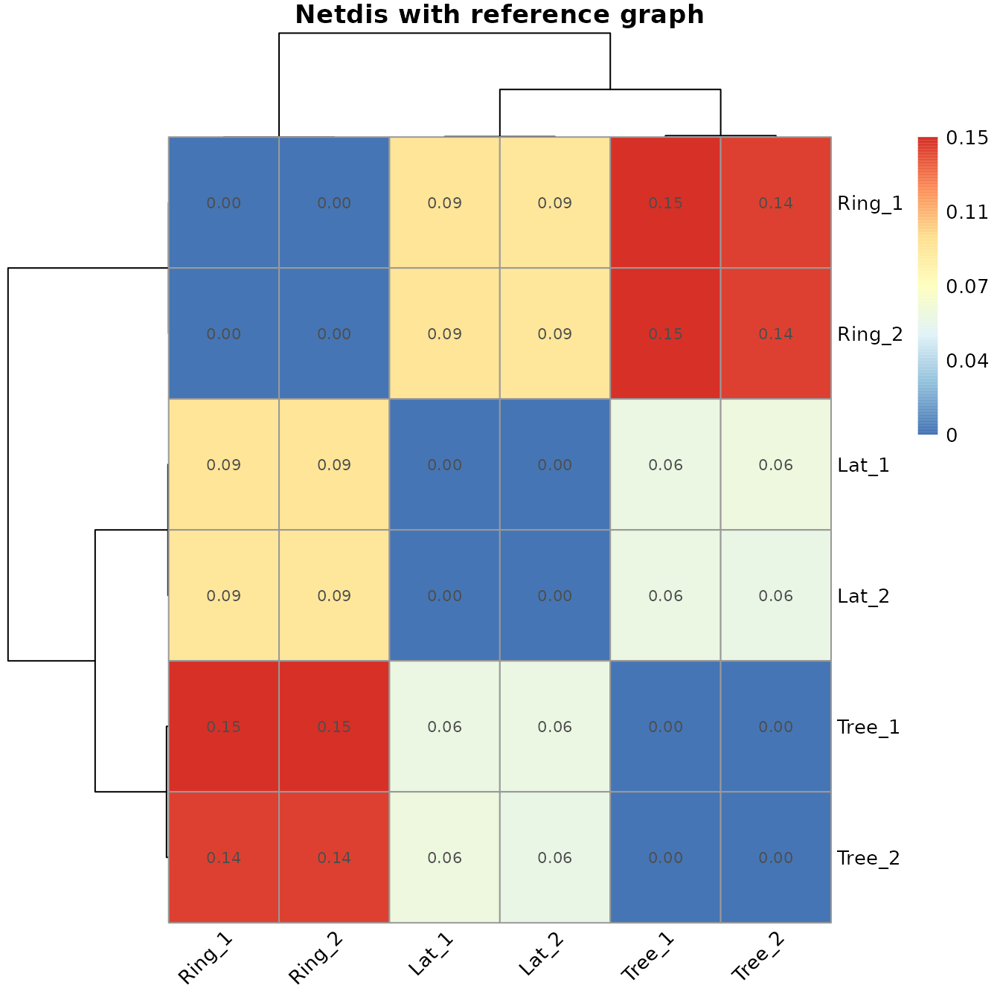
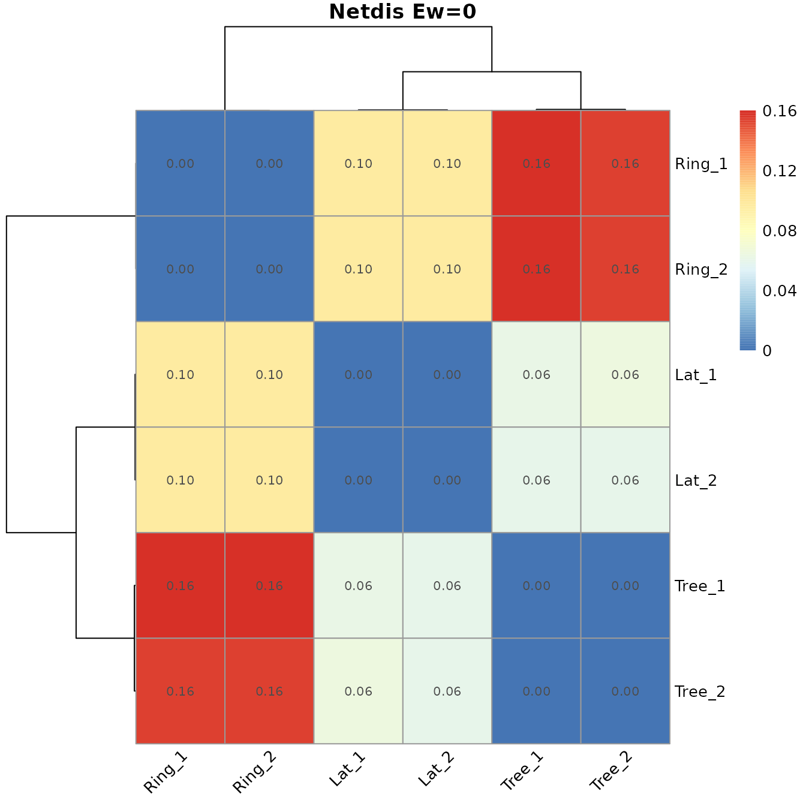
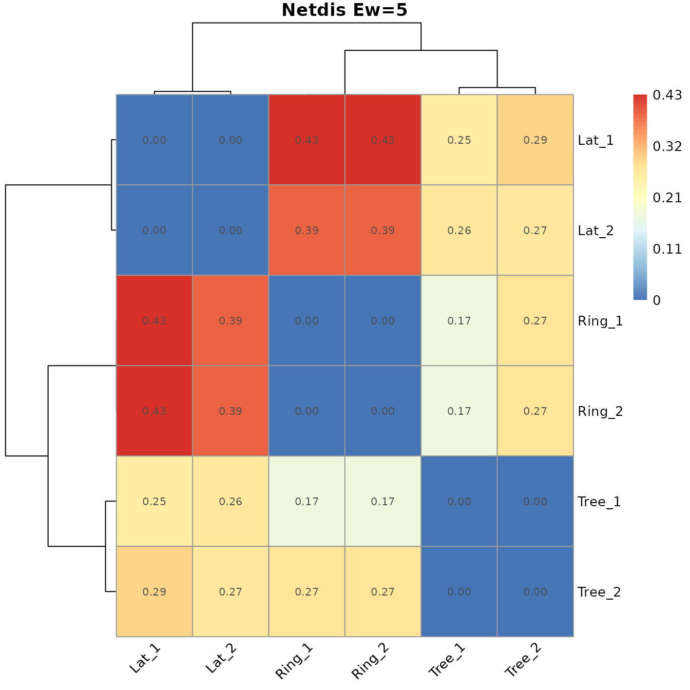
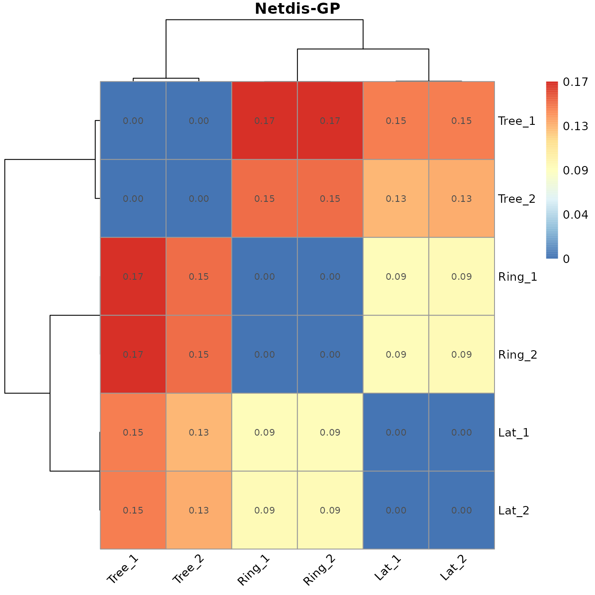
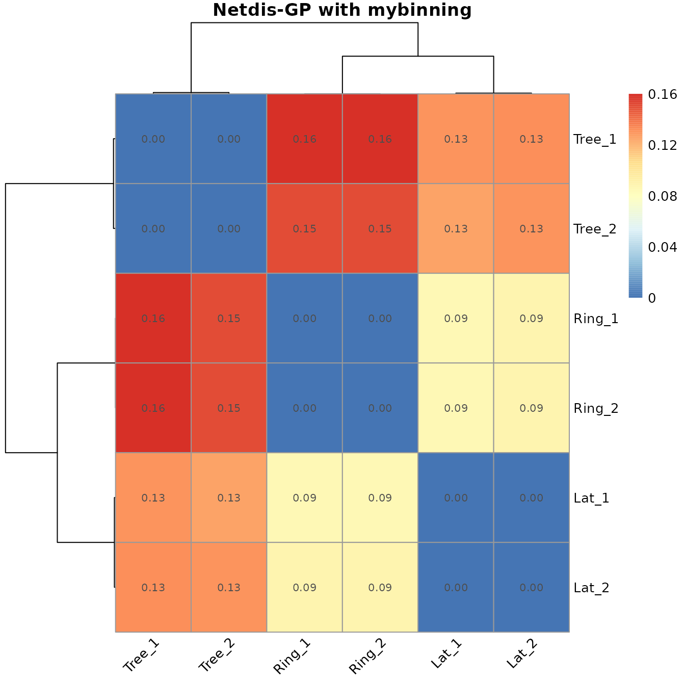
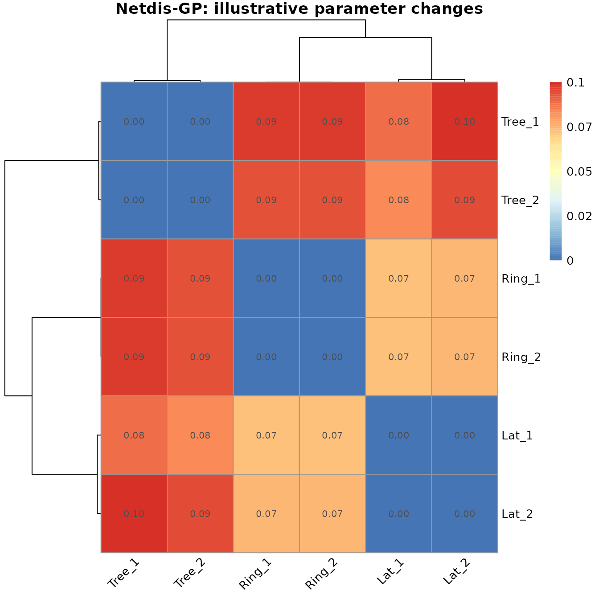

NewNetdisCustomisations.RmdThis vignette explains variants of Netdis via global parameter changes of the functions applying Netdis, for example netemd_one_to_one and netdis_many_to_many. For a more in-depth view of the inner steps of Netdis please check “Netdis: step by step” and “Netdis-GP: step by step”.
Similarly, to see how to use pre-computed properties see “Simple and quick (default) usage 2: pre-computed properties”
For other vignettes in this package see the “Menu”.
Generation of regular grid, ring and tree-like networks with 400 nodes and 1600 nodes. A start-like graph is generated so they can be used as input for the reference graph in the option ref_graph.
# Create lattice, Ring and Tree like networks of sizes 20^2 and 40^2.
# Create networks
set.seed(3171)
gLat_1 <- graph.lattice(c(20,20))
gLat_2 <- graph.lattice(c(40,40))
gRing_1 <- make_ring(20^2)
gRing_2 <- make_ring(40^2)
gTree_1 <- igraph::as.undirected( make_tree(n = 20^2,children = 3) )
gTree_2 <- igraph::as.undirected( make_tree(n = 40^2,children = 3) )
glist <- list(Lat_1=gLat_1, Lat_2=gLat_2, Ring_1=gRing_1, Ring_2=gRing_1, Tree_1=gTree_1, Tree_2=gTree_2)
# Create a random graph to be used as a gold-standard
gst <- igraph::as.undirected(graph.star(1000))For this variant a reference graph or gold-standard graph has to be given in ref_graph:
netdis_mat_gst <- netdis_many_to_many(graphs = glist,
ref_graph = gst
)
netdis.plot(netdislist = netdis_mat_gst,whatrow = 2, main = "Netdis with reference graph")
For this variant please set ref_graph to the desired constant \(k\). In this example we consider \(k=0\) and \(k=5\). Considering \(k=0\) is equivalent to computing Netdis without background expectations:
netdis_mat_zero <- netdis_many_to_many(graphs = glist,
ref_graph = 0
)
netdis.plot(netdislist = netdis_mat_zero,whatrow = 2, main = "Netdis Ew=0")
netdis_mat_5 <- netdis_many_to_many(graphs = glist,
ref_graph = 5
)
netdis.plot(netdislist = netdis_mat_5,whatrow = 2, main = "Netdis Ew=5")
In order to obtain the Netdis-GP variant set ref_graph=NULL (default).
netdisgp_mat <- netdis_many_to_many(graphs = glist,
ref_graph = NULL
)
netdis.plot(netdisgp_mat, whatrow = 2, main = "Netdis-GP")
The ego-network binning function takes as argument a vector of the ego-network edge densities. The function should return a named list that includes: the input densities, the resulting bin breaks (vector of density bin limits), and the vector interval_indexes, which states to what bin each of the individual elements in densities belongs to. See for example:
# Create an ego-network edge density binning function.
mybinning <- function(densities) {
min_counts_per_interval <- 5
num_intervals <- 3
#
if( length(densities) < min_counts_per_interval) min_counts_per_interval <- length(densities)
breaks <- adaptive_breaks(densities,
min_count = min_counts_per_interval,
breaks = num_intervals
)
interval_indexes <- interval_index(densities,
breaks = breaks,
out_of_range_intervals = FALSE
)
list(
densities = densities,
interval_indexes = interval_indexes,
breaks = breaks
)
}
# Let us see an example output of the binning function
binning_example <- mybinning(runif(20))
binning_example$breaks
#> [1] 0.00093606 0.31293453 0.62493299 0.93693146
binning_example$interval_indexes
#> [1] 3 3 3 3 1 3 1 2 3 2 1 1 3 3 1 2 2 1 3 2
binning_example$densities
#> [1] 0.90183463 0.83662820 0.75634512 0.93693146 0.24787592 0.78007443
#> [7] 0.20881321 0.57385278 0.66168051 0.39975093 0.30804320 0.00093606
#> [13] 0.66199332 0.81576412 0.14154199 0.59276806 0.54784373 0.02511692
#> [19] 0.84193079 0.38426721
# Calculate Netdis
netdisgp_mat_mybin <- netdis_many_to_many(graphs = glist,
ref_graph = NULL,
binning_fn = mybinning
)
netdis.plot(netdislist = netdisgp_mat_mybin,whatrow = 2, main = "Netdis-GP with mybinning")
Note that whenever \(E_w\) is taken as a constant value, then the binning will not have an effect on the computation of Netdis.
The following shows possible changes to the subgraph/graphlet size, the radius of the ego-networks considered, the minimum number of nodes and edges that are allowed in the ego-networks used in Netdis, and finally, some parameters to modify the ego-network binning. The following are the default values:
# Maximum graphlet size to calculate counts and netdis statistic for.
max_graphlet_size <- 4
# Ego-network neighbourhood size
neighbourhood_size <- 2
# Minimum size of ego networks to consider
min_ego_nodes <- 3
min_ego_edges <- 1
# Ego network density binning parameters
min_bin_count <- 5
num_bins <- 100These values can be directly imputed and changed into the shortcut Netdis function calls. However, not all combinations may be possible. The following shows the use of subgraphs up to size 4, with 3-step ego-networks and where only ego-networks with at least 5 nodes and 4 edges can be considered. Furthermore, the binning of the ego-networks will be sett to start with 20 bins and each bin will be required to have at least 20 elements.
# (We only recommend changing these default values for those users that have a clear understanding of graph theory behind it)
#(change values with care as not all combinations may be possible).
#Defining a new binning function:
binning_fn <- purrr::partial(binned_densities_adaptive,
min_counts_per_interval = 10, #10-egos required per bin
num_intervals = 20) #Start binning with 20 bins
#Changing parameter values in Netdis:
netdisgp_mat_custom <- netdis_many_to_many(graphs = glist,
ref_graph = NULL,
max_graphlet_size = 4, #Subgraphs/graphlets up to size 4 considered.
neighbourhood_size = 3,# 3-step ego-networks
min_ego_nodes = 5, #ego-networks with at least five nodes
min_ego_edges = 4, #ego-networks with at least 4 edges
binning_fn = binning_fn #Providing a custom binning function
)Here the default parameters are used, and a heatmap of the result of Netdis with default parameters and Netdis with the previously modified parameters is given:
#Default binning
binning_fn <- purrr::partial(binned_densities_adaptive,
min_counts_per_interval = min_bin_count,
num_intervals = num_bins)
#Default computation of Netdis
netdisgp_mat <- netdis_many_to_many(graphs = glist,
ref_graph = NULL,
max_graphlet_size = max_graphlet_size,
neighbourhood_size = neighbourhood_size,
min_ego_nodes = min_ego_nodes,
min_ego_edges = min_ego_edges,
binning_fn = binning_fn
)
netdis.plot(netdislist = netdisgp_mat,whatrow = 2, main = "Netdis-GP: Default parameter values")
netdis.plot(netdislist = netdisgp_mat_custom,whatrow = 2, main = "Netdis-GP: illustrative parameter changes")
W. Ali, T. Rito, G. Reinert, F. Sun, and C. M. Deane. Alignment-free protein interaction network comparison. Bioinformatics, 30:i430–i437, 2014.
A. E. Wegner, L. Ospina-Forero, R. E. Gaunt, C. M. Deane, and G. Reinert. Identifying networks with common organizational principles. Journal of Complex networks, 2017.
L. Ospina-Forero, C. M. Deane, and G. Reinert. Assessment of model fit via network comparison methods based on subgraph counts. Journal of Complex Networks, page cny017, August 2018.
F. Picard, J.-J. Daudin, M. Koskas, S. Schbath, and S. Robin. Assessing the exceptionality of network motifs. Journal of Computational Biology, 15(1):1–20, 2008.